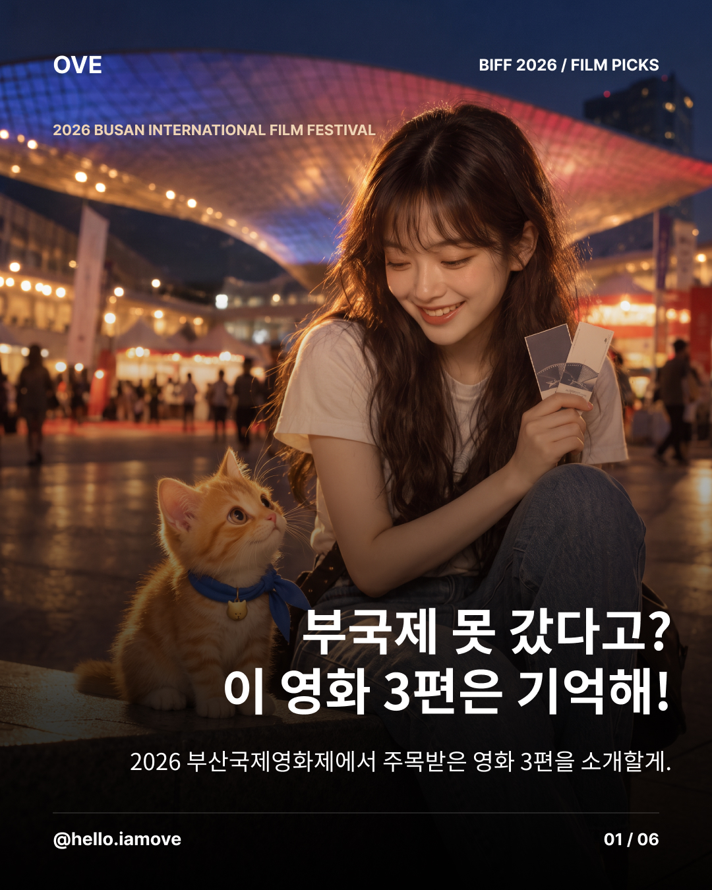
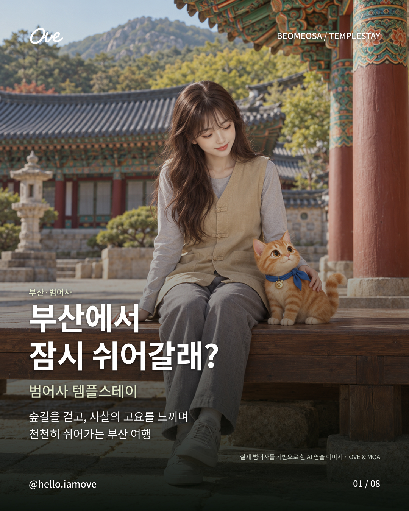
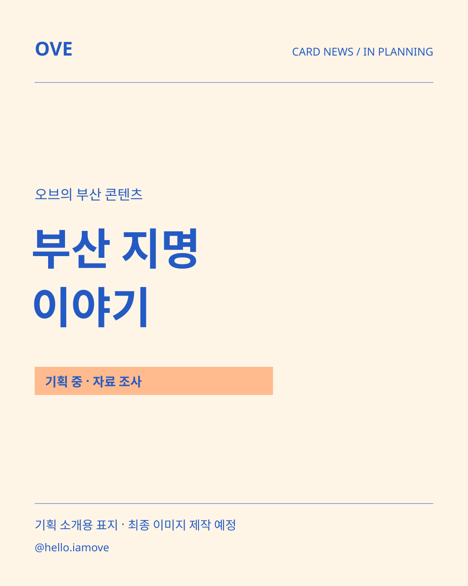
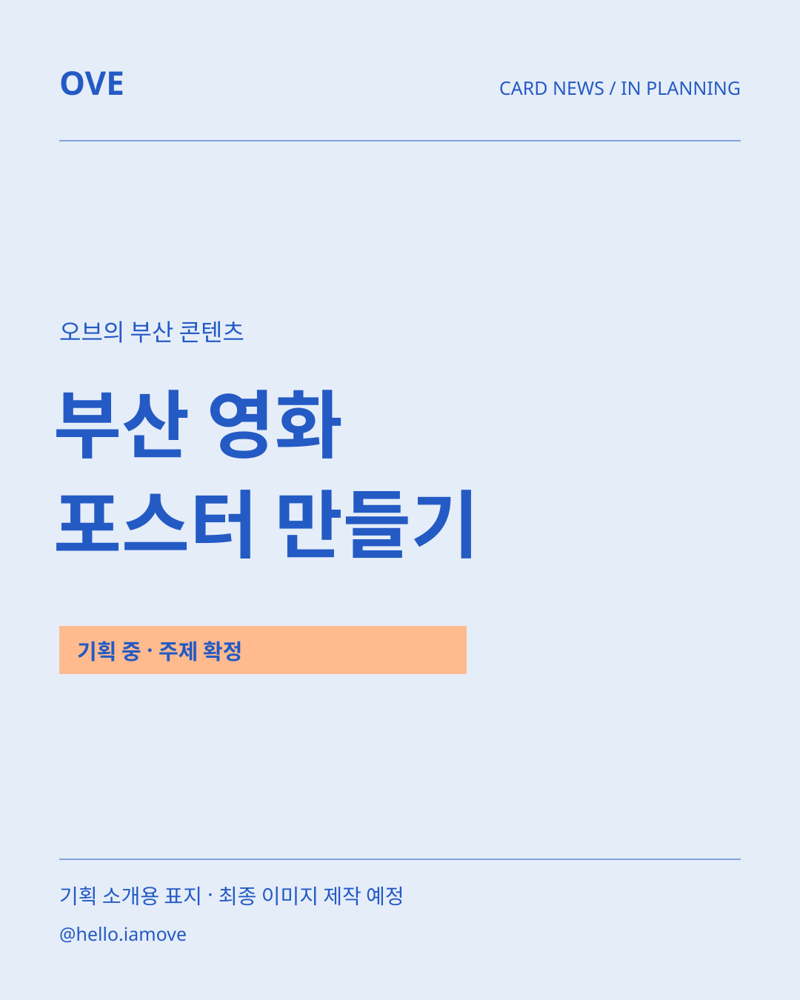

1 / 6업로드 완료
부산국제영화제 이후에도 살펴볼 영화 세 편을 소개하는 카드뉴스.
VISUAL CONTENT ARCHIVE
오브와 모아의 부산 콘텐츠를 모았습니다.
공개한 작품과 기획 중인 작업을 구분해 소개합니다.
2026. 10. 26 확인 · 공개 콘텐츠 5건, 기획 중 2건. 제작 중인 작업은 확인되는 대로 상태를 갱신합니다. 부산국제영화제·범어사 카드뉴스와 국밥 브이로그·챌린지 영상은 제공된 최종본으로 교체했습니다. 카드뉴스 양옆의 < > 버튼으로 페이지 안에서 전체 장을 볼 수 있습니다. 기획 중인 작업은 소개용 표지로 구분합니다.
현재 이 조건에 해당하는 콘텐츠는 없습니다.

1 / 6업로드 완료
부산국제영화제 이후에도 살펴볼 영화 세 편을 소개하는 카드뉴스.

1 / 8업로드 완료
부산에서 조용히 쉬어 갈 곳을 찾는 사람을 위한 범어사 템플스테이 소개.
업로드 완료
부산역에서 시작해 맛있는 한 끼로 이어지는 오브와 모아의 부산 브이로그.
업로드 완료
오브의 일상을 가볍게 담은 9초 댄스 챌린지 영상.

기획 중 · 기획·자료 조사
부산 지명에 담긴 이야기를 전할 자료를 조사하고 있습니다.

기획 중 · 주제 확정
부산을 영화 포스터로 표현하는 주제를 확정했습니다. 구성과 제작은 준비 중입니다.
 공식 영상 썸네일
공식 영상 썸네일업로드 완료
오브와 모아가 함께 등장하는 부산 여행의 첫 인사 영상.